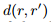
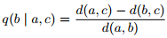
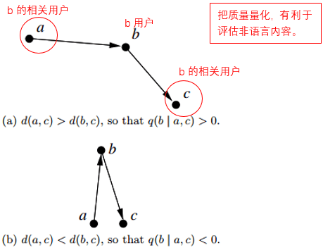
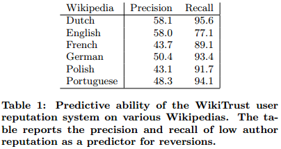
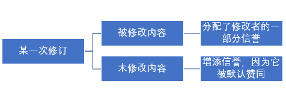
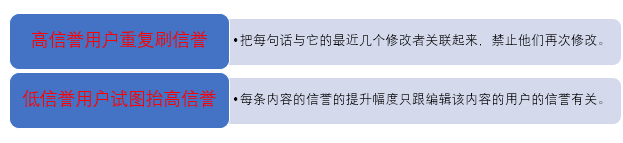
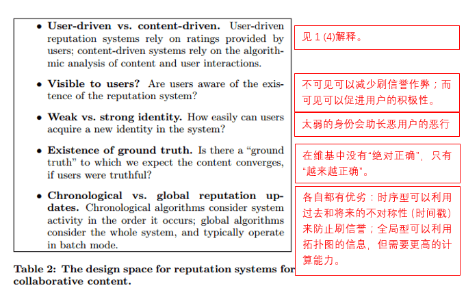
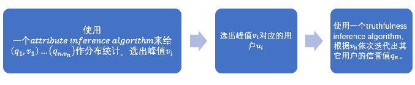

0. 概述
(1) 通过“开放式协同合作”来创作的内容（creation）常常难以保证质量的高低。（例如某条百度词条的可靠度）
(2) 本文讨论的基于内容的（content-driven）信誉系统可以有效地评估内容的可靠度。
(3) 本文最后还讨论了开放式协作中的信誉系统和日常行为法规的关系。
1. 简介
(1) 简单介绍了开放式协作形式的发展（从文字到音频到文档到绘图和地图）。
(2) 在开放式协作系统中建立一个信誉系统，目的是在于鼓励和推动内容的高质量和规范生产（content creation）以及受众对于内容的信任度（contentconsumption）。
(3) 本文用到Wikipedia和Google Maps来说明(2)中的问题。
(4) 介绍了Content-driven和User-driven两种信誉评估方式的区别：
Content-driven：基于内容的分析；较公平准确，更具抗篡改性；而且建立之后立即见效；
User-driven：基于用户反馈和评级；会碍于用户心情、素质等原因影响准确度；建立之后需要几年时间来培养可靠的反馈（用户总体素质）。
(5) 拓展知识：在网页信誉评级方面，基于内容的信誉系统有PageRank和HITS（可借用的算法）。
2. WikiTrust（针对维基内容和小编的信誉系统，附在每条维基词条上）
(1) 三个目标：
a. 以奖励机制激励用户作出持续贡献；
b. 帮助用户和小编提高内容质量、发现破坏行为（低素质用户）。
c. 把高质量内容指引给用户。
(2) 两个系统：
1) 用户信誉系统（The User ReputationSystem）：
加信誉值：所编辑的内容在往后的编辑中留了下来；
减信誉值：有部分或全部编辑工作未完成。
2) 内容信誉系统（The Content ReputationSystem）：
加信誉值：被高信誉值用户所编辑；
减信誉值：编辑被打断。
(3) 用户信誉系统（The User ReputationSystem）
用户的信誉取决于贡献的质量和数量。
1) 基于的假设：
a. 内容是按照修订的顺序来组织的，且每次修订都是由单一用户完成的；
b. 两次修订之间可以比较出不同来；
c. 可以跟踪到每次修订中未修改的部分。
2) 贡献质量：取决于贡献在接下来的编辑中是否被保留下来。
a. 版本间距离：从版本r到r’的距离，即修改的程度。通过单词的删除数、增加数、替换数来计算。

b. 版本质量：某个版本的质量跟它的前一版本和后一版本有关。


根据三角不等式法则，-1≤q≤1。当q=-1时，a=c，b版本的修改被完全删除；当q=1时，b版本的修改被完全保留。
要使名誉系统更加可靠，可以在版本质量的计算中多往前和往后延伸相关用户，使包含的前向用户中至少有两个具有高用户名誉值和高内容名誉值，而后向用户用来判断该版本的贡献质量。
3) 从“贡献质量”到“用户信誉”
a. 二者关系：在利用相关用户对本用户进行贡献质量计算的时候，每个相关用户对本用户的影响跟该相关用户的信誉的对数成正比。（高信誉用户对新用户会有压倒性评估作用（“独大系统”），所以不用线性而用对数。况且线性评估会使系统变成一个“平等系统”。）
b. 影响途径：用户之间是通过版本更新来相互影响信誉的，后来者影响前者，环环相扣，信誉值时刻动态变化。
c. 防诈措施：为防止某些用户通过刷编辑来增加信誉（SybilAttacks），系统每隔几天就会对用户时间线进行巡视检查。（这个问题不会在内容信誉系统出现）
4) 预测质量
a. 能预测贡献质量对用户名誉的影响程度是名誉系统一个很重要特点。名誉值本身也可以用来预测该用户在将来的表现。
b. 质量预测结果由准确率和召回率来评估。

对于低信誉用户：低准确率代表这些用户是新手，他们信誉低但贡献质量高；高召回率代表高信誉用户几乎不可能被修订。
(4) 从用户信誉到内容信誉（Content Reputation）
1) 三点设计要求：
a. Informative。内容的信誉应该对内容质量有很好的代表性；
b. Robust。应能抵御恶意用户的刷信誉行为；
c. Explainable。内容信誉的影响因素应对用户透明。
2) 修订的内容的信誉分配：

3) 一些恶意行为的处理

3. WikiTrust的创意空间：

4. Crowdsensus（谷歌地图上的一个商区标记信誉系统）
(1) 作用：评估用户提供的商区信息的准确度，帮助建立地图商区信息。
(2) 区别（与WikiTrust系统）：
1） 有一个“绝对正确”的标准可供评估对比；
2） 用户不需要知道信誉系统的存在；
3） 身份的概念在这里更强烈了；
4） 充足的计算资源使我们可以考虑使用全局信誉系统（而不是时序信誉系统）。
(3) 策略：每个用户有一个trustfulness value(qu)，刚开始使用先验值，往后迭代更新。

5. 后续工作
(1) 信誉系统要如何起到激励用户、形成良性社区的作用？
(2) 如何平衡新手和老用户的信誉差异？
(3) 如何对作出重大贡献的用户或贡献质量有问题的用户作出立即的、合适的反应？